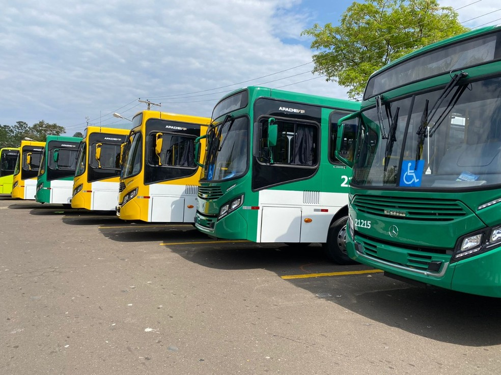

Notícias Cidade
Destaque
Prefeitura de Primavera do Leste garante transporte público gratuito à população
Postado 22 Novembro 2021

Gratuidade valerá pelo período de até um ano ou até o início de um nova concessão.
O transporte público em Primavera do Leste será gratuito para toda a população a partir da próxima segunda-feira (22). Outra novidade, é que novas linhas e horários estarão disponíveis para melhor atender, principalmente, quem depende do transporte público para se deslocar para o trabalho.
O contrato que garante a gratuidade da tarifa dos ônibus de até um ano ou até o início de uma nova concessão está baseado em uma Lei de autoria do Poder Executivo e aprovada pela Câmara Municipal de Vereadores, após a assinatura de um Termo de Ajustamento de Conduta firmado entre a Prefeitura Municipal de Primavera do Leste, Aval Negócios e Intermediações - empresa vencedora da licitação, e Ministério Público do Estado de Mato Grosso.
De acordo com a Coordenadoria de Municipal de Trânsito Urbano, o novos trajetos das linhas foram traçados de forma que será possível atender aos passageiros dos bairros e na região central em pontos estratégicos espalhados pela cidade.
De acordo com o contrato, os ônibus devem circular com no máximo 26 passageiros.
Durante o período de gratuidade, a tarifa do ônibus será custeada com recursos próprios da prefeitura. "Nossa preocupação é poder oferecer um transporte para as pessoas que dependem das linhas dos ônibus para se deslocarem para o trabalho, com essas novas rotas vamos conseguir atender a população, e ainda sem custo com as pesagens pelo período de um ano. O que também vai gerar economia para os passageiros e empresas que eventualmente tinham despesa com o vale transporte", diz o prefeito Leonardo Bortolin.

Os ônibus irão circular em horários específicos: 6h, 11h30, 12h e 18h partindo no referido horário conforme as linhas abaixo:
Linha 01:
Do bairro Tuiuiú até a Praça das Bandeiras, durante o trajeto o ônibus irá passar pelos bairros Guterres, Araras e região da avenida São Paulo.
Linha 02:
Do bairro Castelândia até a Praça das Bandeiras, durante o trajeto o ônibus irá passar pelos bairros Pioneiro, São José e IFMT.
Linha 03:
Do bairro Poncho Verde até a Praça das Bandeiras, durante o trajeto o ônibus irá passar pelos bairros São Cristóvão, Vertente das Águas e UPA.
Linha 04:
Do Primavera III até a Praça das Bandeiras, durante o trajeto o ônibus irá passar pelos bairros Buritis, Primavera II, Lago Municipal e região central.